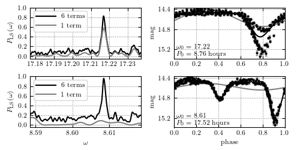

Lomb-Scargle Aliasing¶
Figure 10.18
Analysis of a light curve where the standard Lomb-Scargle periodogram fails to find the correct period (the same star as in the top-left panel in figure 10.17). The two top panels show the periodograms (left) and phased light curves (right) for the truncated Fourier series model with M = 1 and M = 6 terms. Phased light curves are computed using the incorrect aliased period favored by the M = 1 model. The correct period is favored by the M = 6 model but unrecognized by the M = 1 model (bottom-left panel). The phased light curve constructed with the correct period is shown in the bottom-right panel. This case demonstrates that the Lomb-Scargle periodogram may easily fail when the signal shape significantly differs from a single sinusoid.
{kind=link}
# Author: Jake VanderPlas
# License: BSD
# The figure produced by this code is published in the textbook
# "Statistics, Data Mining, and Machine Learning in Astronomy" (2013)
# For more information, see http://astroML.github.com
# To report a bug or issue, use the following forum:
# https://groups.google.com/forum/#!forum/astroml-general
import numpy as np
from matplotlib import pyplot as plt
from astroML.time_series import multiterm_periodogram, MultiTermFit
from astroML.datasets import fetch_LINEAR_sample
#----------------------------------------------------------------------
# This function adjusts matplotlib settings for a uniform feel in the textbook.
# Note that with usetex=True, fonts are rendered with LaTeX. This may
# result in an error if LaTeX is not installed on your system. In that case,
# you can set usetex to False.
from astroML.plotting import setup_text_plots
setup_text_plots(fontsize=8, usetex=True)
#------------------------------------------------------------
# Get data
data = fetch_LINEAR_sample()
t, y, dy = data[14752041].T
#------------------------------------------------------------
# Do a single-term and multi-term fit around the peak
omega0 = 17.217
nterms_fit = 6
# hack to get better phases: this doesn't change results,
# except for how the phase plots are displayed
t -= 0.4 * np.pi / omega0
width = 0.03
omega = np.linspace(omega0 - width - 0.01, omega0 + width - 0.01, 1000)
#------------------------------------------------------------
# Compute periodograms and best-fit solutions
# factor gives the factor that we're dividing the fundamental frequency by
factors = [1, 2]
nterms = [1, 6]
# Compute PSDs for factors & nterms
PSDs = dict()
for f in factors:
for n in nterms:
PSDs[(f, n)] = multiterm_periodogram(t, y, dy, omega / f, n)
# Compute the best-fit omega from the 6-term fit
omega_best = dict()
for f in factors:
omegaf = omega / f
PSDf = PSDs[(f, 6)]
omega_best[f] = omegaf[np.argmax(PSDf)]
# Compute the best-fit solution based on the fundamental frequency
best_fit = dict()
for f in factors:
for n in nterms:
mtf = MultiTermFit(omega_best[f], n)
mtf.fit(t, y, dy)
phase_best, y_best = mtf.predict(1000, adjust_offset=False)
best_fit[(f, n)] = (phase_best, y_best)
#------------------------------------------------------------
# Plot the results
fig = plt.figure(figsize=(5, 2.5))
fig.subplots_adjust(left=0.1, right=0.95, wspace=0.25,
bottom=0.12, top=0.95, hspace=0.2)
for i, f in enumerate(factors):
P_best = 2 * np.pi / omega_best[f]
phase_best = (t / P_best) % 1
# first column: plot the PSD
ax1 = fig.add_subplot(221 + 2 * i)
ax1.plot(omega / f, PSDs[(f, 6)], '-', c='black', label='6 terms')
ax1.plot(omega / f, PSDs[(f, 1)], '-', c='gray', label='1 term')
ax1.grid(color='gray')
ax1.legend(loc=2)
ax1.axis('tight')
ax1.set_ylim(-0.05, 1.001)
ax1.xaxis.set_major_locator(plt.MultipleLocator(0.01))
ax1.xaxis.set_major_formatter(plt.FormatStrFormatter('%.2f'))
# second column: plot the phased data & fit
ax2 = fig.add_subplot(222 + 2 * i)
ax2.errorbar(phase_best, y, dy, fmt='.k', ms=4, ecolor='gray', lw=1,
capsize=1.5)
ax2.plot(best_fit[(f, 1)][0], best_fit[(f, 1)][1], '-', c='gray')
ax2.plot(best_fit[(f, 6)][0], best_fit[(f, 6)][1], '-', c='black')
ax2.text(0.02, 0.02, (r"$\omega_0 = %.2f$" % omega_best[f] + "\n"
+ r"$P_0 = %.2f\ {\rm hours}$" % (24 * P_best)),
ha='left', va='bottom', transform=ax2.transAxes)
ax2.grid(color='gray')
ax2.set_xlim(0, 1)
ax2.set_ylim(plt.ylim()[::-1])
ax2.yaxis.set_major_locator(plt.MultipleLocator(0.4))
# label both axes
ax1.set_ylabel(r'$P_{\rm LS}(\omega)$')
ax2.set_ylabel(r'${\rm mag}$')
if i == 1:
ax1.set_xlabel(r'$\omega$')
ax2.set_xlabel(r'${\rm phase}$')
plt.show()